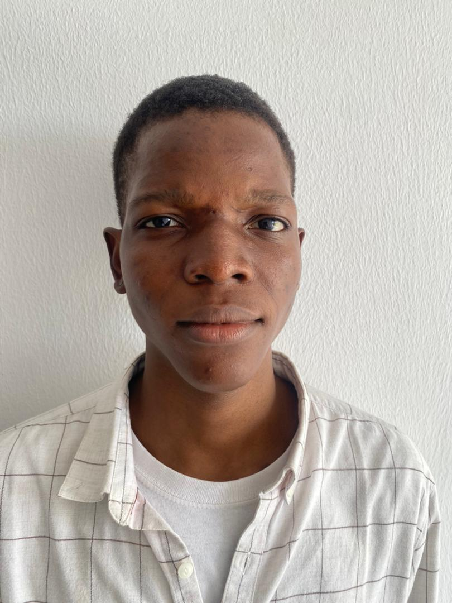

I honestly dont know what to write here Olagbaiye Samson Olajide is a passionate and driven psychology graduate with a keen interest in behavioral analysis, forensic psychology, and research. As an aspiring analyst and researcher, Samson has devoted his academic journey to exploring the psychological dimensions of self-assertiveness, peer pressure, parenting styles, and their impact on personality development—particularly among undergraduates in Lagos State. With a strong foundation in psychological theory and practical research experience, Samson has skillfully applied structured methodologies, including the use of validated scales and statistical analysis, to investigate complex social and psychological phenomena. His recent work has delved into contemporary issues such as substance use, academic stress, gender influences, and social attitudes toward violence and risk-taking behavior. Samson is not only academically inclined but also deeply reflective, emotionally intelligent, and committed to making a meaningful contribution to society through psychology. Whether conducting fieldwork, reviewing literature, or preparing professional research reports, he demonstrates precision, clarity, and a deep respect for ethical research practices. Known for his analytical mind and a heart for helping others, Samson is poised to make significant strides in the field of psychology and beyond.
